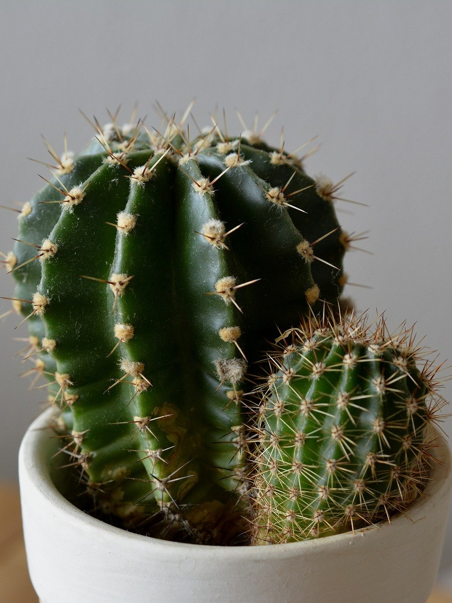

Уход и проблемы выращивания
Уход за кактусом в домашних условиях заключается в следующем:

- чтобы кактус получал столько света, сколько ему требуется, поставьте его на окно, в которое будет светить солнце минимум 6 часов в день.
Периодически вращайте кактус, чтобы все его стороны равномерно получали солнечный свет и рост был равномерным;
- кактусы растущие в помещении следует поливать раз в 10-14 дней. Перед поливом проверьте влажность пальцем, погрузив его в почву до второй фаланги.
Почва должна полностью просохнуть, прежде вы начнёте поливать её снова;
- кактусы любят температуру 21-32°C летом и 10-13°C зимой. Не оставляйте кактус при более низких температурах, он может обморозиться;
- лучший горшок для кактуса – это простой глиняный горшок с отверстием. Они лучше всего работают, потому что не удерживают лишнюю влагу,
ведь кактусы не любят долго оставаться во влажном грунте;
- кактусам нужно немного удобрений. Удобрять кактусы желательно один раз в 2 месяца, во время их периода роста;
- Когда ваш кактус покрыт пылью, он не может нормально поглощать свет.
Время от времени влажной салфеткой аккуратно стирайте пыль, которая может скапливаться на кактусе.